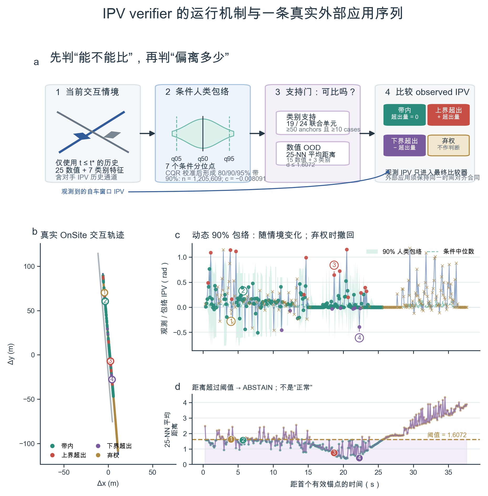
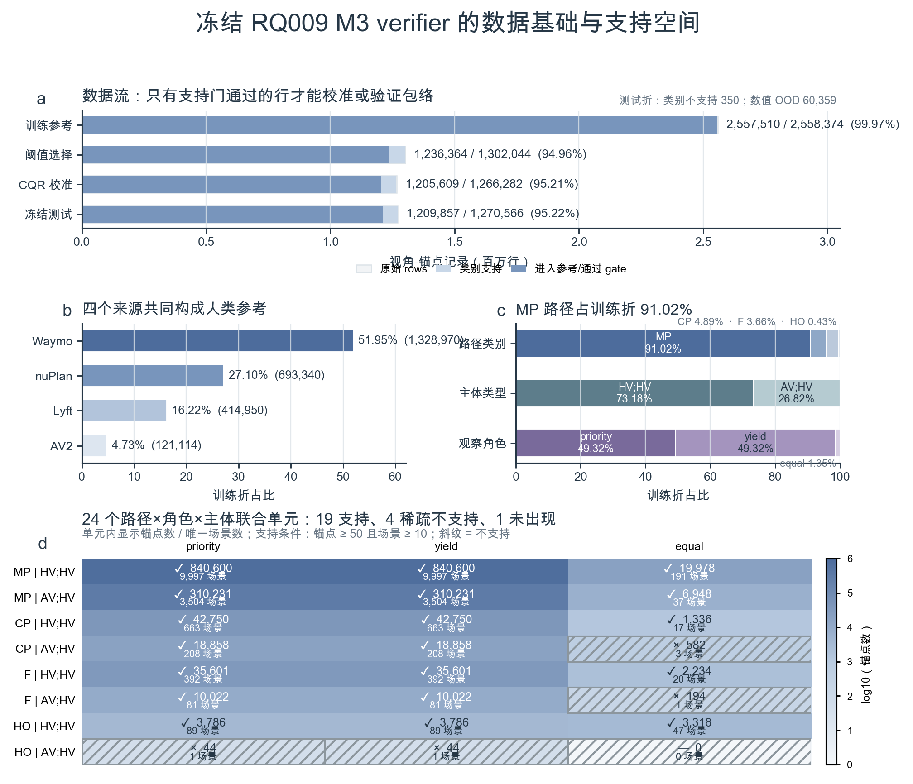
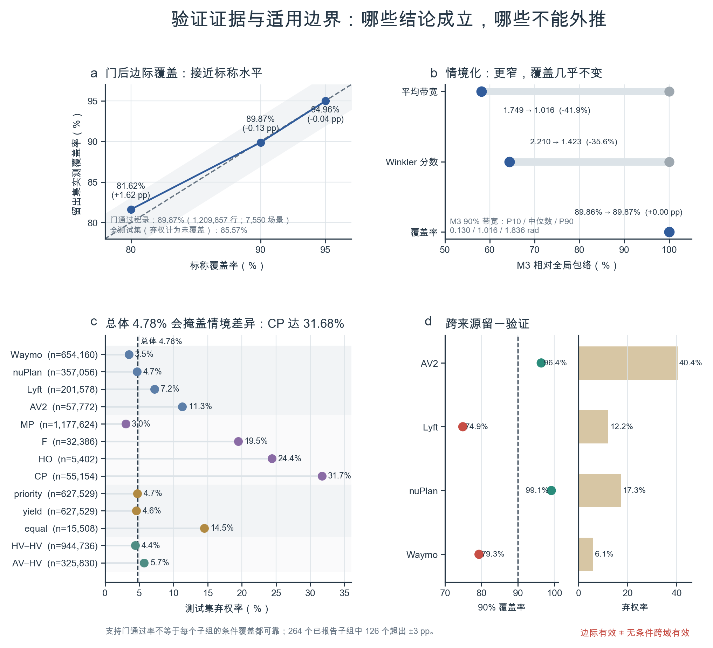

情境先进入包络模型
模型只使用锚点 t* 及之前的历史：相对运动、冲突几何、角色、主体类型，以及对手 IPV 的历史通道。它输出七个条件分位点，经 CQR 校准形成 80% / 90% / 95% 人类包络。
RQ009 M3 · figure-led explainer · 2026-07-11
把它想成一个会拒答的经验裁判：先根据当前交互情境生成“类似情境下的人类 IPV 范围”，再确认这个情境是否被训练数据充分支持；只有两道门都通过，才比较自车的观测 IPV 与包络。
先看上半部的机制，再沿着同一条真实 OnSite 序列看下半部。图中的 ①–④ 在轨迹图、包络图和支持距离图中一一对应。

模型只使用锚点 t* 及之前的历史：相对运动、冲突几何、角色、主体类型，以及对手 IPV 的历史通道。它输出七个条件分位点，经 CQR 校准形成 80% / 90% / 95% 人类包络。
第一道门检查路径×角色×主体组合是否有足够锚点和唯一场景；第二道门检查 25 个最近邻的平均距离是否 ≤ 1.6072。任何一道失败都只能弃权。
观测到的自车窗口 IPV 不参与人类包络的生成，只进入最终比较：在带内记为 0；高于上界给正超出量；低于下界给负超出量。
为什么要单独画时间轴？ 如果运行时拿“当前帧 IPV”去对比一个为未来窗口训练的包络，数值即使能算出来，语义也已经错位。外部应用必须保持同一 observed-column 与时间窗口合同。
| 图中编号 | 帧 / 时间 | 状态 | 观测 IPV | 90% 包络 | 支持距离 | 有符号超出量 | 怎样读 |
|---|---|---|---|---|---|---|---|
| ① | 63 / 4.003 s | 弃权 | −0.0639 | 撤回 | 1.6152 > 1.6072 | — | 距离略高于阈值；即使保留了原始分位预测，也不能解释为带内。 |
| ② | 80 / 5.703 s | 带内 | 0.1282 | [−0.6057, 0.8942] | 1.5600 | 0 | 支持门通过，观测值位于包络内。 |
| ③ | 210 / 18.700 s | 上界超出 | 0.6430 | [−0.0021, 0.1026] | 0.7403 | +0.5404 | 不是“离中位数多远”，而是超过最近边界 0.5404 rad。 |
| ④ | 246 / 22.299 s | 下界超出 | −0.3926 | [−0.0400, 0.6490] | 0.4056 | −0.3526 | 负号仅表示低于下界的方向，不自动等于风险方向。 |
这条真实序列共有 374 个有效锚点：189 个通过支持门、185 个弃权；通过门的锚点中 167 个带内、14 个上界超出、8 个下界超出。它用于展示机制，不代表总体发生率。
这里最重要的不是总量大，而是支持空间是否覆盖当前情境。图 2 同时展示样本流、来源组成、情境不平衡和 24 个联合单元的支持状态。

6,397,266 是四个数据折中的视角-锚点记录总数。同一交互场景可贡献多个时刻和两个观察视角，所以不能把行数当成独立案例数。
训练折中 Waymo 51.95%、nuPlan 27.10%、Lyft 16.22%、AV2 4.73%。来源多样不等于任何新数据域都自动有效。
主体类型为 HV–HV 73.18%、AV–HV 26.82%；equal 观察角色只有 1.35%。总体指标天然更接近高频情境。
例如 CP | equal | AV–HV 有 582 个锚点，但只来自 3 个唯一场景，仍然不支持。24 个联合单元中 19 个支持、4 个稀疏不支持、1 个从未出现。
覆盖率只回答“包络是否包含了约定比例的留出目标”，不回答安全、因果或任意新域的有效性。图 3 把正面证据和失败边界放在同一页。

90% 标称包络在 1,209,857 个 gate-passing 测试记录上达到 89.87%，误差 −0.13 个百分点。
相对全局包络，M3 平均带宽从 1.749 降到 1.016；Winkler 分数降低 35.6%，覆盖率几乎不变。
已报告子组中有 126 个条件覆盖偏离标称值超过 ±3 个百分点；CP 测试弃权率达到 31.68%。
留一来源验证中，Lyft 的 90% 覆盖只有 74.9%；AV2 虽覆盖 96.4%，但弃权率达 40.4%。
先看支持门，再看包络，再读超出方向。不要先看 outside=false，因为弃权行也可能以 false 占位，但那一行根本没有可用判定。
支持门通过，且 lo ≤ observed ≤ hi。超出量为 0。
含义：与同情境人类经验包络一致；不是安全证明。
支持门通过，但观测 IPV 高于上界。超出量为正。
含义：偏离方向向上；符号不自动映射为“更危险”。
支持门通过，但观测 IPV 低于下界。超出量为负。
含义：偏离方向向下；幅度是到最近边界的距离。
类别组合不支持，或数值 OOD 距离超过阈值。包络与偏离不可用。
含义：模型说“我没有足够依据比较”，不是“没有异常”。
这些不是措辞问题，而是会直接改变统计分母、时间语义和论文结论的边界条件。
verifier 描述与人类经验分布的一致性，不提供碰撞风险、法规合规或控制质量的因果判定。
弃权时必须撤回包络和偏离解释，并单独报告弃权率；不能把 outside=false 计入正常率。
总体 90% 覆盖接近标称，但低频路径、角色和跨来源组合可明显偏离；结论必须附带支持空间。
它可以展示 verifier 怎样工作，但不能单独证明模型已在 OnSite 域获得同等级别的覆盖保证。
target_ipv_future 是估计器产生的未来窗口 IPV，不是人工标注的人类意图真值。因此“超出包络”应表述为估计量相对经验包络的偏离，不能升级为对主观意图的事实判断。
所有图都同时导出 PNG、PDF 和保留文字对象的 SVG；每个面板对应的源数据也单独保存，便于复核或改图。
d ≤ 1.6072176695。observed − hi；下界超出为 observed − lo。{kind=link}
{kind=link}
{kind=link}
{kind=link}
{kind=link}
{kind=link}